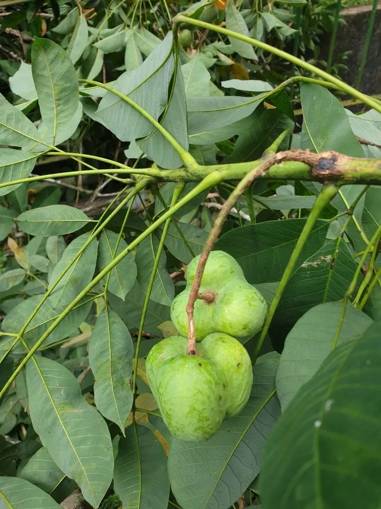

农作物与经济植物 · 植物界
橡胶树 Hevea brasiliensis

橡胶树割开树皮后流出的胶乳可制成天然橡胶，是轮胎、胶管等工业制品的重要原料，东南亚是其主要产区。
- 分类
- 门被子植物门纲双子叶植物纲目金虎尾目科大戟科属橡胶树属
- 栖息环境
- 赤道附近低海拔热带雨林气候区，喜高温高湿与充足光照
- 地理分布
- 原产南美亚马孙流域，现主产于泰国、印尼、马来西亚及中国海南、云南
- 保护级别
- 暂无评估（栽培经济植物）
物种志
橡胶树是大戟科落叶乔木，高可达 20–30 m，树皮灰褐色，较平滑，割开后可见乳白色的胶乳。叶为三出复叶，小叶椭圆或倒卵形，全缘，叶柄顶端有腺体。花小，单性同株，圆锥花序，无花瓣。果实为蒴果，球形，成熟后裂开，内含 3 粒种子，种子有斑纹。树皮中的乳管系统是胶乳产生和储存的部位。
橡胶树原产南美洲亚马孙河流域，当地原住民早已使用橡胶制作球和防水布；19 世纪种子被引种到东南亚，如今泰国、印度尼西亚、马来西亚等国成为主要产胶区，中国云南、海南也有大面积种植。它喜高温、高湿和充足光照，适宜在赤道附近低海拔地区栽培。割胶时在树干上割开螺旋形切口，胶乳沿切口流入收集杯，经凝固、压片、干燥后制成天然橡胶，用于轮胎、胶管、手套等。
形态与习性
- 树高20–30 m
- 叶三出复叶，小叶全缘
- 胶乳存在于树皮的乳管系统中
- 割胶割开树皮收集胶乳
- 原产地南美亚马孙河流域
- 主要用途轮胎等天然橡胶制品
- 适宜气候高温高湿的热带气候
趣味知识
- 橡胶树的胶乳储存在树皮的乳管里，割胶就是割开乳管让胶乳流出。
- 天然橡胶的弹性极佳，至今仍难以被合成橡胶完全替代。
- 橡胶树种子成熟后会弹裂，把种子弹射出去。